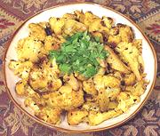

|
Cauliflower SautéIndia - Kashmir - Gobi Dum | ||||
| Serves: Effort: Sched: DoAhead: |
4 side *** 55 min Yes |
Cauliflower is often available in relatively cool Kashmir, and a popular vegetable. This recipe is outstandingly delicious as a side dish or light vegetarian main dish. Its spicing is richly aromatic and not chili hot. | |||
|
2 ----- 1 1/2 1/2 1/2 1/2 1 1/2 2 2 ----- 4 1 1/16 ----- |
# --- in t t T t T t T T --- T t t --- |
Cauliflower -- Spicing Ginger root Chili powder (1) Turmeric Coriander seed Garam Masala (2) Lemon Juice Salt Yogurt (opt) Water ---------- Oil (3) Cumin seed Asafoetida (4) -- Garnish Cilantro leaves |
PREP - (25 min)
|
imv_caulik1 080910 tok74 - www.clovegarden.com
©Andrew Grygus - agryg@aaxnet.com - Linking to and
non-commercial use of this page is permitted.